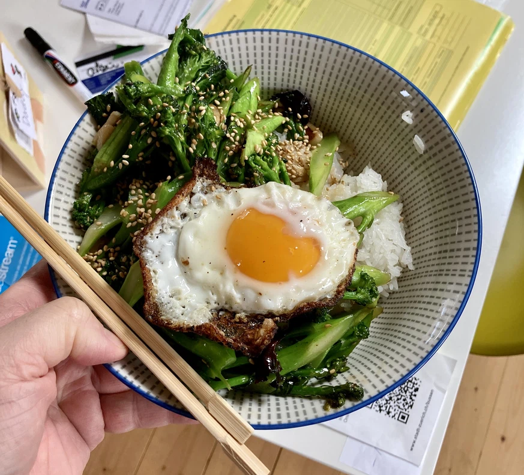

Baroni Broccolini

Für zwei Personen
Zutaten
- 1 EL Sesamsamen
- 200g Broccolini oder anderes grünes Gemüse
- 2 EL Erdnussöl
- 1- 2 Zehen Knoblauch
- 1-2 EL Austernsauce
- 2 Spiegelei
Vorgehen
- Sesamsamen im trockenen Wok ein paar Minuten unter ständigem Wenden rösten, bis sie goldbraun sind. Sofort aus der Pfanne nehmen, damit sie nicht verbrennen.
- Zirka 2 Tassen Wasser in den Wok geben, eine Prise Salz beigeben und aufkochen. Broccolini beigeben und ein paar Minuten bei geschlossenem Deckel dämpfen/blanchieren.
- Wasser ableeren, Broccolini beiseite stellen, Wok mit einem Papiertuch trocknen und wieder auf die heisse Herdplatte stellen.
- Bei hoher Hitze Knoblauch und Chilis einige Sekunden im Öl anbraten, bis er etwas Farbe bekommt. Broccolini sofort wieder in den Wok geben und unter stetigem Rühren einige Minuten braten. Austernsauce beigeben und nochmals eine Minute pfannenrühren. Sesamsamen darüber streuen.
- Spiegeleier zubereiten
- Broccolini und etwas Reis auf einem Teller oder in einer Schüssel anrichten; in den jetzt leeren Wok einen gehörigen Gutsch Öl geben und darin eines dieser asiatischen Spiegeleier mit leicht knusprigem Rand braten; dazu servieren.
Quelle: Watson